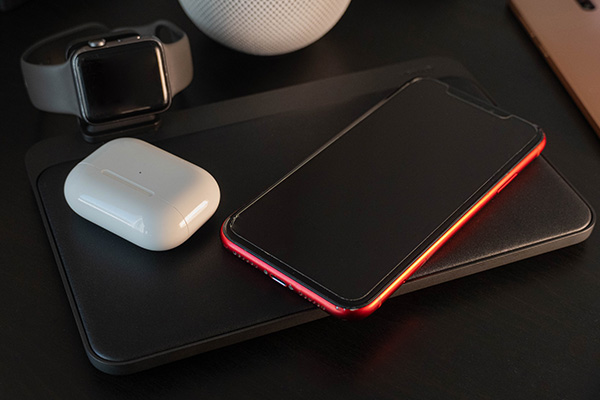
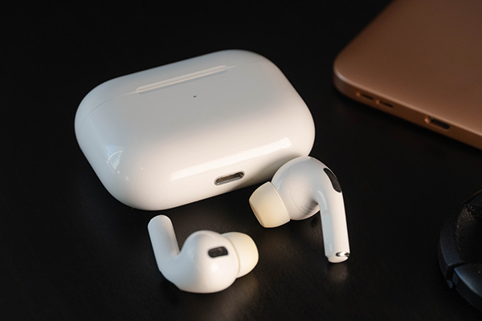
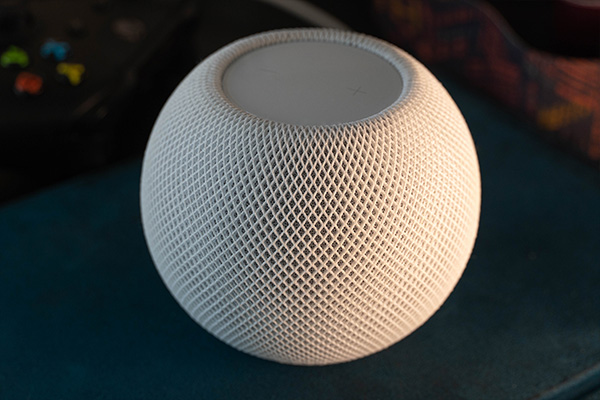
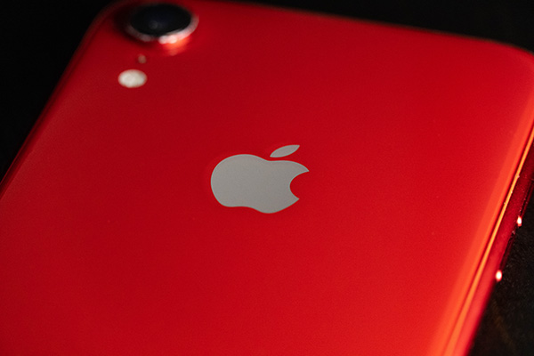

Diving into the technology hole with Christopher Rempe
Reviews
Nomad Base Station Pro

Since I first saw a Powermat Wireless Charger back in 2010, wireless charging has been a fasination for me. And although it's been over a decade since I was amazed that I could charge my DS Lite without plugging in a cable, there hasn't been a major change in how we use wireless charging pads. Sure, they've gotten faster, and we rely on the QI standard instead of the Powermat's PMA, but we still have to align our devices almost perfectly inorder for it to start to charge (every try to wirelessly charge AirPods? It's a nightmare). But that is where the Nomad Base Station Pro changes the game. Place your device anywhere on it, and boom, power. This is thanks to the FreePower mat from Aira that is below it's leather top, it can sense where your device is (up to 3 at a time), and create a charging field around it. This blew my mind when I first used it. Being able to just throw my AirPods case on it and not having to worry that I'll come back in a couple of hours to find it not charging has been amazing. But, there is a stange thing about it when it comes to charging speeds. If you have an iPhone it'll charge at 7.5W, but if you have an Android device it'll only charge at 5W. This is strange because most high end Androud devices can wirelessly charge faster than iPhones can, and I can't seem to find anything about why Nomad and Aira would limit the charging speed like they do. And while I have not experienced this, some people have complained that the charger fails to charge their devices fully, so keep that in mind. But overall, this is a seemingly magical device, that solves the biggest issue facing wireless chargers today, and if you can stomach the $200, I think you'd like it.
Apple AirPods Pro

I was hesitant when I purchased my pair of AirPods Pro during a sale a little less than a year ago. For me, in ear earbuds did not play nice with my ears, and they would start to get painful the second I put them in. Besides, I already had a pair of Sony WH1000-XM3 over ear headphones that I wore everywhere (yes, I was that guy). But when I plopped the AirPods Pro buds into my ears, there was no pain. In fact, I can wear them all day with very little discomfort. So, they're comfortable, but if I am going to ditch my WH1000-XM3 for daily use, they better sound good. Well, they do! Plus their features like noise-cancelling and spatial audio (knows where your looking and can track your head movements) workes surprisingly well. And the transparancy mode is by far the best I've heard, handly beating my Sony's. Overall, they have taken my daily use crown from the Sony's, and I am extreamly happy with them.
Apple HomePod Mini

In the land of the smart home, there are many ways to control the devices you have, but one of the more popular ways that has come up is that of a smart assistant speaker. While there are multiple smart speakers out there, we really only have 3 choices of which assistant we can get: Amazon Alexa, Google Assistant, and Apple's Siri. So, why go for the HomePod Mini when there are many options? Well it comes down to smarts, sound, and privacy. On the smarts side of things, Apple's Siri is lacking compared to Amazon Alexa and Google Assistant. This is because it requires HomeKit support on the devices it controls, which is an Apple standard for smart home devices that requires the device to be able to be used through a HomeKit hub (HomePod/Apple TV/iPad in home mode), and that it must work even if there is no internet. This takes away control that a device manufacurer might want to have over their product, but is good for the end user. In similarly sized speakers, the HomePod sound better than the compitition, however it is also more expensive than it's compitition. Where the Echo Dot and Google Home Mini cost $50 for something round the HomePod Mini's size, the HomePod Mini costs $100 and both Amazon's and Google's speakers at that price sound better (but are much larger). The final thing to think about with a smart speaker is privacy. This is where I think Apple shines in the field. You see, both Amazon and Google make their money by gathering data on you, and using that data to sell you something whereas Apple makes money on the App Store, and their products and services you buy. This means they have less reasons to harvest the data that a smart speaker gathers. Both Amazon and Google claim that they don't use the data gathered from the speakers for their profile on you, but they have the motivation to do so where Apple has less.
In a surprise announcment on January 18, Microsoft announced that they are planning on purchasing Activision Blizzard King for an eye watering $68.7 billion in an all cash offer. This not only would be the largest acquisition in gaming history, but also the largest acquisition in Microsoft's history as well. This comes at a time when Activision Bilzzard is under a lot of scrutiny as there have been an alarming amount of sexual assult allogations coming out of their offices. What will this mean for Activision Blizzard King as well as the whole gaming industry as a whole? No one knows yet. But less compitition is usually a bad thing, and while this is probably the best case scenareo as reports are coming out that shareholders and the board where pushing for a sale, time will tell.
Apple's Rumored Fall Event

Current rumours are pointing at Apple's fall event for 2022 to be a big one. This is when they typically announce the new iPhones, but we are also expecting the next MacBook Pro with the M2 chip along side a new iMac, Mac Pro, a fully new MacBook Air, AirPods Pro 2, new Apple Watches including a ruggidized one, and finally two new iPads. This is according to Mark Gurman who is a trusted source when it comes to Apple leaks, and if true this will be the largest product launch in Apple's history.
After leaking the Google Pixel Watch in 2021, Jon Prosser is claiming that Google is planning it's long rumored Pixel Watch on May 26th, 2022. If this is true, this means that we would have known what the Pixel Watch looks like for over a year! But this isn't a new thing for Google, who constantly has issues with product design leaks with some being leaked over 6 months before they've been announced. We'll just have to wait and see if the leaked date is true or not, Google is known for pushing back dates further and further, but hopefully it'll come out on May 26th and give Android users another great smart watch to choose from.